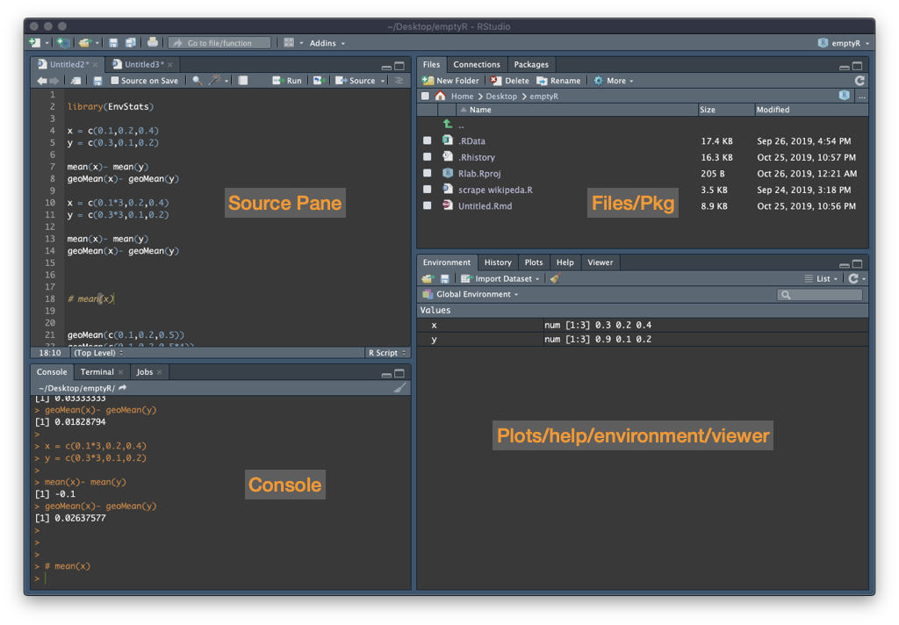

Course 1 - Introduction to R
R studio contains four panels: a script panel where you can save your code (we will introduce this later so to begin there will just be three panels), a console where you can enter and run your code and where the outputs are displayed, an environment which lists the objects you create, and another window which includes help, files and displays any plots you create.

Our course starts in the R console, which those of you who are familiar with R but not RStudio will recognise. We will enter commands as input into the console, and receive output from the console. We will start with some simple basic operations, for which R is clearly very excessive.
Entering 1+1, we get the output [1] 2. The output is 2, but the [1] lets us know that the number 2 is the first number of output. If we had an output that was particularly large (e.g. 100 seperate numbers) then r may let us know that the first row displayed starts with the first value [1] and the second row starts with the [x]th value.
## add 1 to 1.
1 + 1## [1] 2## divide 12 by 4
12/4## [1] 3## times 3 by 7
3*7## [1] 21## 10 to the power 3
10^3## [1] 1000## root isn't a basic operation so we will look at later.It is possible to create objects, an object can take a number of forms (e.g. a number, a vector of numbers, a matrix, a data-frame). We can then use these objects going forward rather than the values directly. Operations can be applied to these objects, and objects can be over-written. R is basically just objects and functions.
## objects basics
x <- 3
y <- 5
x + y## [1] 8x <- 4
x + y## [1] 9z <- x + y
z## [1] 9a <- 10
a## [1] 10a <- a + 1
a ## [1] 11 1. Set d equal to 10.
2. divide d by 5
3. multiply d by 8
4. add 8 to d
5. what is d?
1. d = 10
2. d = d / 5
3. d = d * 8
4. d = d + 8
5. 24We can perform evaluations, which provide a true or false answer. For example the input 4>2 returns FALSE.
It can be very useful in cases where an outcome is binary (e.g. an individual dies or remains alive). Or where we want to change a continuous variable to a binary.
## simple evaluations
## 4 is greater than 2
4 > 2## [1] TRUE## 4 is greater than 5
4 > 5## [1] FALSE## 4 is equal to 3, note double == for an evaluation
4 == 3## [1] FALSE## 4 is not equal to 3, note != is not equal to.
4 != 3## [1] TRUE## the character x is equal to the character x.
"dog" == "dog"## [1] TRUE"dog" == "cat"## [1] FALSE## the output from an evaluation can be stored as an object, x. This object can be subject to operations & manipulations.
b <- 4<2
b## [1] FALSEObjects don’t have to take a single value. For example a single object may be the heights of each child in a group of children (in the example below a small class of 4).
We have been working with single values, which are vectors of 1. To illustrate the different classes we are going to create some vectors which we will then join together later to make a dataframe.
Different class include numeric, character, logical, integer & complex (ignore).
## numeric
height <- c(1.72,1.78,1.65,1.90)
height## [1] 1.72 1.78 1.65 1.90## numeric
weight <- c(68,75,55,79)
weight## [1] 68 75 55 79class(weight)## [1] "numeric"## character
first_name <- c("Alice","Bob","Harry","Jane")
first_name## [1] "Alice" "Bob" "Harry" "Jane"## factor
sex <- factor(x = c("F","M","M","F"))
sex## [1] F M M F
## Levels: F M## logical
tall <- height > 1.8# Adding:
c(1,2,3) + 1## [1] 2 3 4c(1,2,3) + c(1,2,3)## [1] 2 4 6# multiplication
heightft <- height*3.281. Create a vector called 'odds' with the numbers 1,3,5,7,9.
2. Show what class odds is.
3. Evaluate which numbers in the odd vector are greater than 4.
4. Create a vector called 'fail' containing 1,3,5,'seven',9.
5. Show what class fail is.
6. Create a vector that gives everyone's weight in pounds (2.2lbs to kg)
1. odds = c(1,3,5,7,9)
2. class(odds)
3. odds > 4
4. fail = c(1,3,5,'seven',9)
5. class(fail)
6. lb_from_weight = weight * 2.2
lb_from_weightThere are multiple types of object in R. We can store objects together in a data-frame. In our example data-frame each column is a variable (height, weight, first_name), and each row is an individual.
Different object types include:
## data frame- columns are variables, rows are observations.
df <- data.frame(height,weight,first_name,sex)
df## height weight first_name sex
## 1 1.72 68 Alice F
## 2 1.78 75 Bob M
## 3 1.65 55 Harry M
## 4 1.90 79 Jane F## we can select a single variable within the dataframe using the dollar sign.
df$height## [1] 1.72 1.78 1.65 1.90## We can add a new variable easily, in this case based on other variables within the dataframe.
df$bmi <- df$weight / df$height^2
df## height weight first_name sex bmi
## 1 1.72 68 Alice F 22.98540
## 2 1.78 75 Bob M 23.67125
## 3 1.65 55 Harry M 20.20202
## 4 1.90 79 Jane F 21.88366We can subset our data, to reduce it to those we are interested in. This is useful when cleaning our data, and when changing a continuous variable to a categorical.
## Our data-frame contains the height, weight, first name and bmi of 4 individuals.
df## height weight first_name sex bmi
## 1 1.72 68 Alice F 22.98540
## 2 1.78 75 Bob M 23.67125
## 3 1.65 55 Harry M 20.20202
## 4 1.90 79 Jane F 21.88366#To subset a data frame we can use square brackets i.e df[row,column]
#Selecting a column(s)
df$height## [1] 1.72 1.78 1.65 1.90df[,"height"]## [1] 1.72 1.78 1.65 1.90df[,1]## [1] 1.72 1.78 1.65 1.90df[,1:3]## height weight first_name
## 1 1.72 68 Alice
## 2 1.78 75 Bob
## 3 1.65 55 Harry
## 4 1.90 79 Janedf[,c(1,3)]## height first_name
## 1 1.72 Alice
## 2 1.78 Bob
## 3 1.65 Harry
## 4 1.90 Jane#selecting a row(s)
df[1,]## height weight first_name sex bmi
## 1 1.72 68 Alice F 22.9854#We might also want to select observations (rows) based on characteristics of the data
#E.g. we might want to only look at the data for people who are taller than 1.75m
#create a logical variable called min_height which contains T/F for each individual being over 175cm.
min_height <- df$height >= 1.75
min_height## [1] FALSE TRUE FALSE TRUE## Subset the data to include only those observations (rows) for which height > 175cm (using min_height).
df.at_least_175 <- df[min_height,]
df.at_least_175## height weight first_name sex bmi
## 2 1.78 75 Bob M 23.67125
## 4 1.90 79 Jane F 21.88366#People smaller than 1.75m
## Subset the data to include only those who are not above min-height of 175cm.
smaller = df$height < 1.75
df[smaller,]## height weight first_name sex bmi
## 1 1.72 68 Alice F 22.98540
## 3 1.65 55 Harry M 20.20202df[!min_height,]## height weight first_name sex bmi
## 1 1.72 68 Alice F 22.98540
## 3 1.65 55 Harry M 20.20202Note that there are other more advanced methods, which uses pipes and require less code (these are covered in more advanced courses).
1. Select the 3rd row from the data frame
2. Select the weight variable from the data frame using your prefered method
3. Select alice's data from the data frame
4. Subset the data frame to show just the data for the females
5. type df[,-1] what does this give
1. df[3,]
2. df[,"weight"]
3. df[df$first_name == "Alice",]
4. df[df$sex == "F",]
5. Prints all rows, except the first one
Exercise 1
Calculate the following:
5*10 20/3 Calculate x where a = 20, b = 9, c = 5, d = 1.2.
Exercise 2
x <- c(10,30,4,52,60,7,8,10,12,15,14,17,19,20,25,30)
x are above 8 Can you create a matrix with numbers and characters.
names <- c("Anne","Tom","Jamie","Max","Claire")
ages <- c(12,16,25,34,28)
cbind(names,ages)What happens if you try to use the ages?
e) Create a dataframe for five individuals (Andrew, Betty, Carl, Diane and Elisa) who are aged (62,80,24,40,56) and have gender (male, female, male,female, female).
f) Use evaluations and subsetting to find the characteristics of the individual who can claim their free bus pass (age 65+).
g) Create a variable in the dataframe called life expectancy, set this to 83 for females and 80 for males.
h) Create another variable called lyr (life years remaining) which is the number of years to life expectancy for each individual